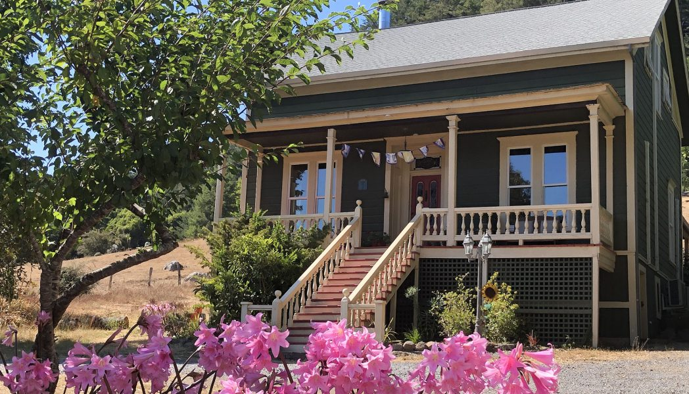

Duncan House, circa 1880
A unique, historic lodging establishment adorned with turn-of-the-century antiques, art, decor and furniture, located in Duncans Mills, California, in the Russian River area.
Enjoy the elegant architecture and design with multiple sitting rooms, a modern kitchen, 4 bedrooms, 2 bathrooms, 2 decks, a classic front porch, hot tub, BBQ, open space & privacy!
Learn More
Steps from downtown Duncans Mills
Walking distance to downtown Duncans Mills, arguably one of the best kept secrets on the Russian River, with its adorable local shops, general store, Cape Fear restaurant, Blue Heron bar, Sophie’s Cellars wine & beer bar, Gold Coast Coffee & Bakery, and more, all located on the banks of the Russian River.
Explore the VillageThe whole house
4 bedrooms, 3 total bathrooms, multiple sitting rooms, a full kitchen, decks, hot tub & BBQ — reserved as one private retreat.
On the Russian River
Kayaking, fishing, redwoods and the Sonoma Coast are all within easy reach of the front porch.
“Duncan House is a place where old magic and new memories have a cup of coffee.”The Russian River, Duncans Mills, California